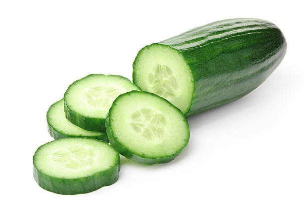

Огурец (лат. Cucumis sativus) — это однолетнее травянистое растение семейства Тыквенные, популярная овощная культура. Его плоды, употребляемые в пищу в недозрелом виде, отличаются высокой сочностью (содержат много воды, витамины и калий), имеют зеленую кожуру и белую мякоть. Родиной считается Юго-Восточная Азия.
Огурцы выращивают уже тысячи лет.
Спасибо за посещение сайта!
